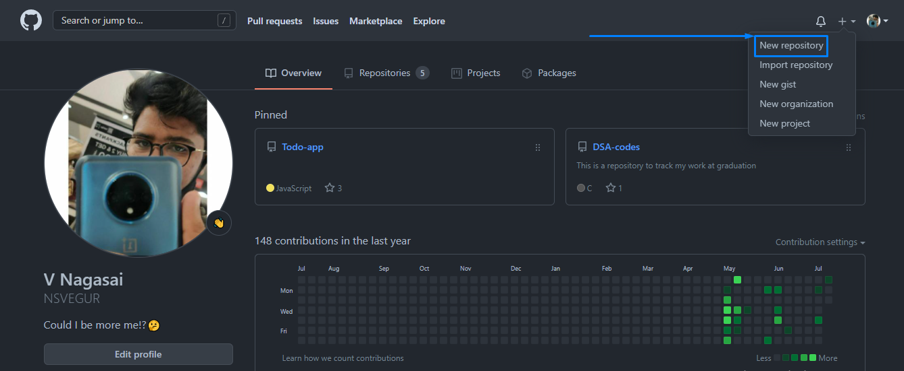

Git & Github setup for beginners
üëãguys!!
ü§ìI am Nagasai Vegur
üî∞This is my first article.
ü§™Now lets dive into the topic we need to learn.
Git is like a platform to track your work through out the programming career. Lets make it simple üòâ, you take pictures with your camera which are stored in gallery in your mobile and upload them to some social media platform to track your common life matters. Likewise you write codes and do many projects and they are stored in your local machine, here git is a platform to make a track of it. As insta you can make it public and private as your convinience. I said you this in simple words as I understood but there‚Äôs a lot to know, even I learnt about this yesterday üòù
Now create your insta, sorry git acc üòõ
Create your Github acc using the below link
üëâüèªGitHub
After creation just explore it for few minutes! ->Then create a new repository as shown in top right corner of the image given below.

->Give a name and description and hit on create a repository as given below.

->Now you can add a new file README.md to give some hints about what you are doing in this repository
You can find add file option as provided in the above image and also you can take a look at a README.md file which’s providing information about my profile.
->Now lets make it from our local machine.
Download the git bash using this link based on your OS -> Install Git
Use below commands in your local terminal to connect it to your git account
=> git config --global user.name "user name used in git"
=> git config --global user.email "mail id you need to connect with"
Use this clone command to clone online repository
=> git clone "link of your repository"
you can find the link of your as shown below in mine.
Now you can access your repository through your local machine but changes made are only dedicated to local!
Here are some git commands to access from git to local and local to git
=> git add . ----- *A period command which is used to stage all the changes you done in that repository*
=> git add 'file_name' ----- *Command used to stage the changes in a specifice file* **Here stage refers to add the changes**
After every change before you push it to online you need to commit, it may be several changes or even one.
=> git commit -m "main commit message to show up" -m "description of that commit" ----- *This is only to commit the staged file*
=> git commit -am "main commit message to show up" ----- *Using -am functions as both staging and commiting function*
After this you need a remote to connect your local to online like ssh
->Now generate a key in public formate and add it to your git ssh keys.
=> ssh-keygen -t rsa -b 4096 -C "mailid"
This command generates a key in your specified folder, copy that using cat and highlighting the key and paste it at you git acc ssh keys to give access to push changes made in local machine to your online repository.
You can see adding ssh key option in accout settings and then in ssh and gpg keys bar.
Follow the instructions provided in the below link based on your os to make up the above statement if different from windows. ssh agent
YO! you can now push it to online
=> git push origin branch ----- *This is to push the changes made in local machine to online*
Refresh the page to see the changes made!
Lets create a repository in local and then add it to git!
Create a folder as ususally using mkdir command in your terminal, and add a .md or .txt or .c file as your wish. Then use git add . to stage the file, but it shows error due to no .git files in that folder.
=> git init ----- *use this command to add .git file to the new local folder*
Now as usally stage and commit the changes you made. But git push statement doesn’t work here as there is no remote access or knowledge about where to push the repository to the terminal. So create another repository in online mode and then copy the link of that repository.
=> git remote add origin "paste the link of repository here" ----- *now terminal knows where to push the changes made*
=> git remote -v ----- *This command shows the remote information*
=> git push origin branch ----- *(new branch creates a branch in it automatically if theres no default, if its present you need to mention it specifivally)*
Now lets move on to branching, merging and pull concept!
These are useful when many are working under a specific repository or if any pub finds a bug and added a pull request to correct your code, like wise.